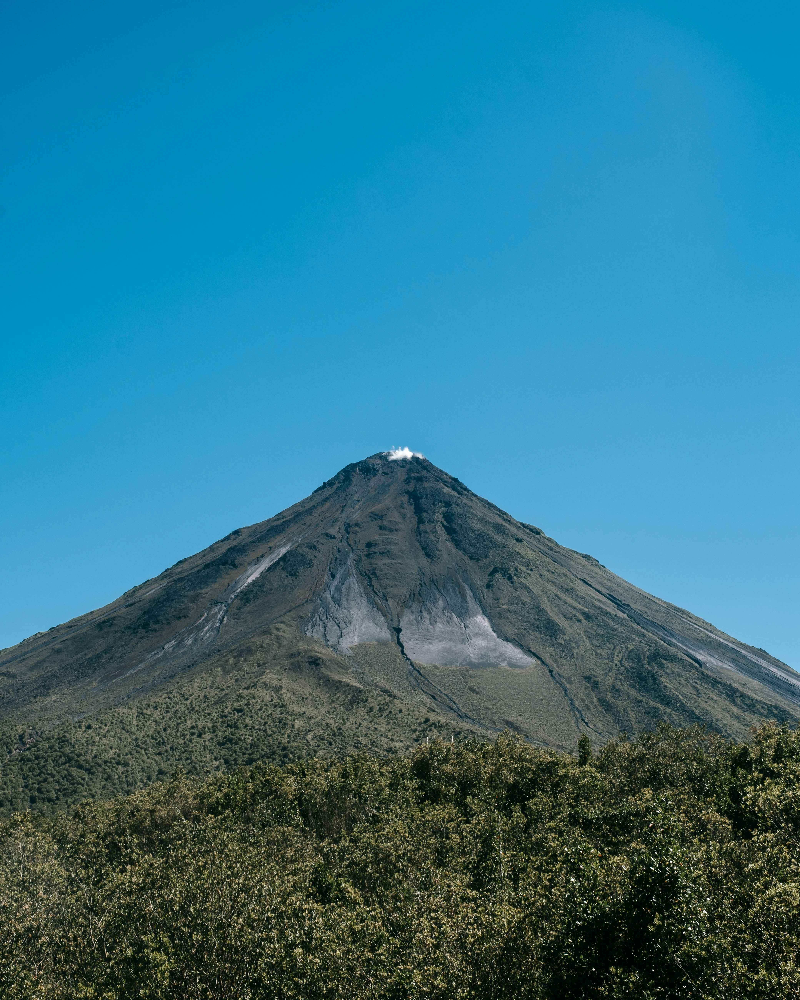
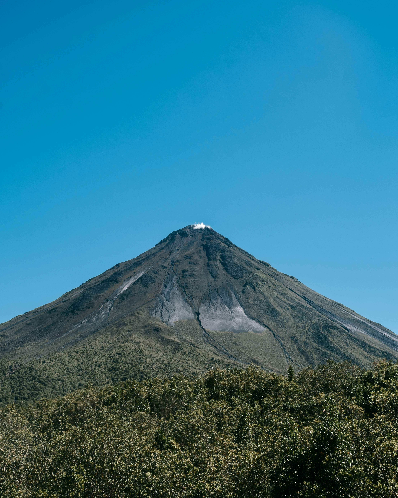

PURA VIDA SALVAJE
Wild Pura Vida
Apoyo y conservación de animales en peligro de extinción
Apoyo y conservación de animales en peligro de extinción

 

Costa Rica alberga una de las mayores biodiversidades del planeta. Desde los bosques tropicales hasta los arrecifes de coral, cada ecosistema es hogar de especies únicas que merecen ser protegidas. Este proyecto promueve la conservación de la fauna silvestre y la educación ambiental para mantener viva la esencia natural del país.